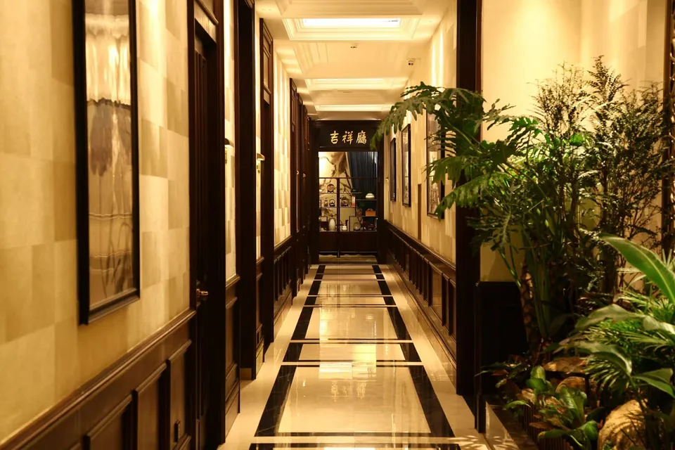
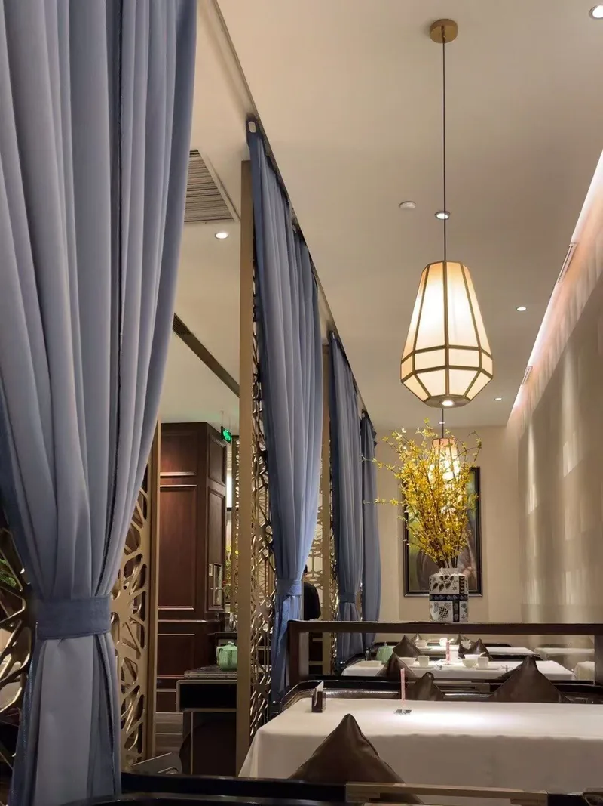
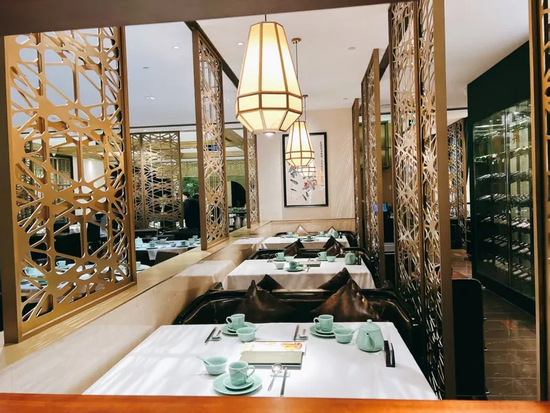

1998
西湖边，学一味「春天」
创始人陈春生成长于杭州。少年时常在西湖边帮厨，看师傅挑活鱼、控火候——西湖醋鱼要现杀现做，龙井虾仁要当季新茶，东坡肉要文火慢炖。他渐渐懂得：好菜不在花哨，在于应季、应时、应人。
西湖的春天来得早、去得也快。陈春生说，他最早记住的不是某一道名肴，而是湖畔柳烟初起时，厨房里飘出的那阵热气——那是他后来给店取名「春天」的缘由。

2026 必吃榜 · 经典粤菜
一口粤韵，梦回江南
扫码了解我们的故事，等餐时光，也是江南好时节
轻触或滑动 · 拨动水面
从西湖畔的一缕春气，到一张讲究本味的粤菜餐桌
创始人陈春生成长于杭州。少年时常在西湖边帮厨，看师傅挑活鱼、控火候——西湖醋鱼要现杀现做，龙井虾仁要当季新茶，东坡肉要文火慢炖。他渐渐懂得：好菜不在花哨，在于应季、应时、应人。
西湖的春天来得早、去得也快。陈春生说，他最早记住的不是某一道名肴，而是湖畔柳烟初起时，厨房里飘出的那阵热气——那是他后来给店取名「春天」的缘由。
为了把「鲜」做到极致，陈春生南下广州，在老字号厨房一待就是三年。粤菜讲究清而不淡、鲜而不俗、嫩而不生、油而不腻——片皮鸭要皮脆肉嫩，老火汤要足时足料，点心要一蒸一捏见真章。
他在岭南明白：江南有诗意，粤菜有章法。两者并不冲突，缺的是一位愿意慢慢把它们合在一起的人。
第一家店开在上海。店名藏着两层意思：「西湖」是乡愁与风骨，「春天」是当令与生机。不是照搬杭帮菜，也不是刻板复刻广府味——而是以江南的心境做粤菜：选当季、摆得雅、讲得清楚。
开业那天，陈春生只写了八个字挂在门口：「因时而食，以鲜为本」。二十余年过去，这仍是厨房里不变的规矩。
店面换了，菜单广了，但有几件事一直没变：汤每天现熬，鸭每天现片，红米肠每天现包。服务员仍会多讲一句——「这碟红米肠，外皮的红来自天然红米，是粤式点心的老做法。」
我们希望您等餐的片刻，也能读懂这家店的来处。因为了解一道菜的故事，往往比匆忙下单，更能让一顿饭记得长久。

「不是把西湖搬进餐厅，而是把西湖的讲究——应季、本味、留白——写进每一道粤菜里。」
每道菜背后，都有一小段值得读一读的故事
「油而不腻，叉烧，精心调制」
选用梅花肉，以蜜汁、玫瑰露、南乳低温腌制，高温快烤锁汁。好的叉烧，断面粉嫩、切面亮泽——这是粤菜烧腊档口的基本功，也是西湖春天坚持了二十年的招牌。
ⓘ 价格以店内实际为准 · 更多菜品请咨询服务员
精致雅致的江南庭院风，暖黄灯光、木质桌椅、水墨画点缀——如水乡般诗意舒适
